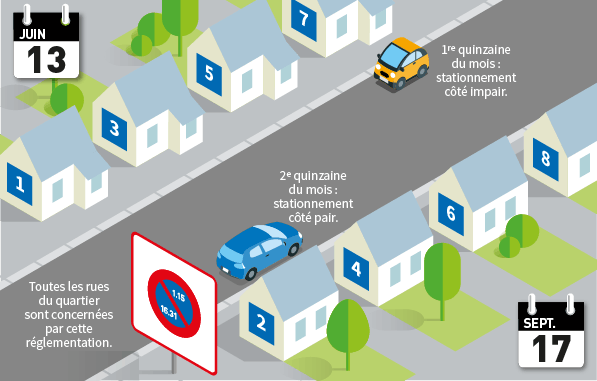
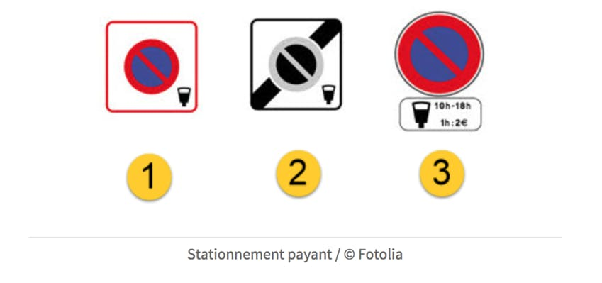
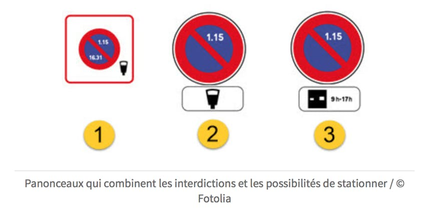

Le stationnement et l’arrêt des véhicules
En France, le stationnement d’un véhicule peut être aussi bien payant que gratuit. Pour savoir s'il s’apprête à stationner sur un emplacement payant, le conducteur doit absolument observer le marquage au sol ainsi que les panneaux de signalisation installés au niveau de la place de stationnement. Il est primordial de garder à l’esprit qu’un stationnement qui sera jugé comme étant gênant en cas de contrôle des forces de l'ordre entraînera des sanctions administratives, et parfois même la mise en fourrière du véhicule.
Les futurs automobilistes doivent apprendre à reconnaître les éléments indiquant s’ils peuvent stationner ou s'arrêter, et ceci en fonction de leur environnement de circulation. Ils pourront obtenir ces informations grâce aux différents éléments verticaux signalant une interdiction de stationner ou de s’arrêter, mais aussi grâce à la ligne jaune, qui peut être continue ou discontinue.
Stationnement gratuit, par disque ou payant...
Même lorsqu’il s’agit d’un stationnement gratuit, il arrive que l’usager doive disposer d’un dispositif particulier pour être autorisé à laisser son véhicule sur une place de stationnement, comme avec un disque de stationnement. Celui-ci devra être placé dans la boîte à gants et utilisé à chaque fois que l'usager souhaitera stationner sur une place de stationnement contrôlée par un disque de stationnement.
Dans le cas d’une zone de parking payante, de nombreux parcmètres sont généralement disposés autour des places de stationnement afin que l’automobiliste puisse acheter facilement un ticket de stationnement. Les résidents de certaines agglomérations peuvent bénéficier de places de stationnement spécifiques et réservées à leur usage, en tant que riverains de ces zones ne disposant pas toujours de places de parking privatives. Un automobiliste peut également stationner sur certains emplacements réservés à l’arrêt ou au stationnement des véhicules de livraison, mais uniquement durant la nuit (entre 20h et 7h), le dimanche et les jours fériés.
Stationnement alterné
Lorsqu’il est question de stationnement alterné, les règles pour stationner varient en fonction des heures ou des périodes dans le mois.
Parfois, les restrictions peuvent être appliquées au côté pair ou impair dans une rue par l’intermédiaire d’un panneau rond. Quand cette configuration s’applique à une zone, la signalisation est intégrée à un panneau de zone, qui informe alors l’ensemble des usagers que toute la zone suit la règle du stationnement alterné.